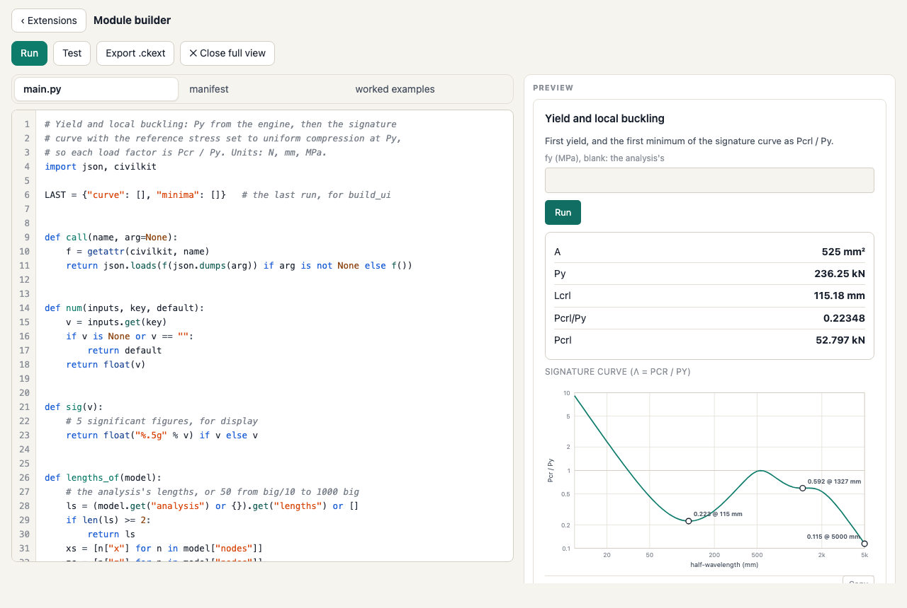
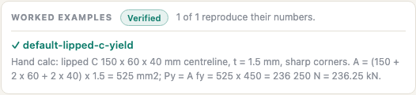

Tutorial: your first module
In the app's module builder, from the starter to a Verified module you can export and share: first yield, the reference stress at the squash load, the signature curve, and its first minimum as Pcrl / Py. About half an hour, with no installation.
You need a desktop or tablet browser (the builder works on a phone, but code is easier to write on a larger screen) and a little Python. The numbers below are for the app's default section, a lipped C 150 × 60 × 40 mm (centreline), t = 1.5 mm, fy = 450 MPa. Reload the app to get it back.
Keep the capability reference and the UI reference open beside this page.
1. Open the builder and run the starter#
Open Extensions (on a phone, More › Extensions)
and press New module…. The builder opens with three tabs (main.py,
manifest, worked examples), the tools Run,
Test, Export .ckext and ⤢ Full view, and a
Preview pane. main.py holds the starter:
# A CivilKit Buckling module: build_ui draws the form,
# check computes. Every engineering number comes from a
# civilkit capability (the engine); this file orchestrates.
# Units: N, mm, MPa. Declare each capability you call
# in the manifest.
import json, civilkit
def call(name, arg=None):
f = getattr(civilkit, name)
return json.loads(f(json.dumps(arg)) if arg is not None else f())
def num(inputs, key, default):
v = inputs.get(key)
if v is None or v == "":
return default
return float(v)
def sig(v):
# 5 significant figures, for display (finer than the
# worked examples' 0.1 % tolerance)
return float("%.5g" % v) if v else v
def build_ui(inputs, result, calcLines):
kids = [
{"type": "text", "value": "First yield of the section in the analysis, from the engine."},
{"type": "field", "id": "fy", "label": "fy (MPa), blank: the analysis's",
"inputType": "number", "default": inputs.get("fy", "")},
{"type": "button", "id": "run", "label": "Run", "action": "run-check"},
]
if result:
kids.append({"type": "result", "items": result})
if calcLines:
kids.append({"type": "calc", "lines": calcLines})
return {"type": "panel", "title": "My module", "children": kids}
def check(inputs):
fy = num(inputs, "fy", call("getModel").get("fy"))
if not fy or fy <= 0:
raise ValueError("fy must be a positive stress (MPa)")
props = call("sectionProps", {})
y = call("firstYield", {"fy": fy})
py = y["Py"] / 1000.0
return {
"result": [
{"label": "fy", "value": fy, "unit": "MPa"},
{"label": "A", "value": sig(props["A"]), "unit": "mm²"},
{"label": "Py", "value": sig(py), "unit": "kN"},
{"label": "My (x axis)", "value": sig(y["Mxx"] / 1e6), "unit": "kN·m"},
],
"calcLines": [
{"label": "Squash load",
"eq": "Py = fy A = %g × %g / 1000 = %.4g kN" % (fy, props["A"], py)},
],
}Read it top to bottom:
callwraps the convention every capability follows: the argument goes in as a JSON string, the answer comes back as one.call("firstYield", {"fy": fy})returns a plain dict.numreads a number from the form, falling back to a default when the field is blank.build_uireturns the form: atextline, anfyfield, aRunbutton whoseactionis"run-check", and, after a run, theresultrows and thecalclines.checkasks the engine for the section properties and first yield, and returns result rows and one calc line. It types no engineering number of its own.
Press Run in the tools row (or Ctrl/⌘ + Enter). The preview shows the module's form, running in the sandbox on the section in your analysis. Leave fy blank and press the preview's own Run.
four result rows, fy 450 MPa, A 525 mm², Py 236.25 kN and My (x axis) 10.773 kN·m, and one calc line,
Py = fy A = 450 × 525 / 1000 = 236.3 kN.
A = 525 mm² is easy to check by hand: the centreline is 150 + 2 × 60 + 2 × 40 = 350 mm long and t = 1.5 mm. That check is the start of a worked example.
2. Name it and declare what it calls#
Open the manifest tab. It is a form that writes manifest.json, shown underneath.
Set:
- id:
yourname.yield-and-local. Reverse-domain and unique: a new id installs as a new module. - Name:
Yield and local buckling. - Description: one line on what it does.
The Capabilities checklist is what the module may call; anything else is refused. This module will call
getModel, firstYield, stress and signature. Leave those ticked, tick
stress and signature, and untick sectionProps, which it will no longer use. The
manifest now reads:
{
"id": "yourname.yield-and-local",
"name": "Yield and local buckling",
"version": "0.1.0",
"civilkitApi": "^1.0",
"description": "First yield of the section, and its first signature-curve minimum as Pcrl / Py.",
"license": "MIT",
"contributes": [{ "point": "buckling.tool", "id": "main" }],
"capabilities": ["getModel", "firstYield", "stress", "signature"]
}(The builder writes the capabilities in its own order; the order does not matter.)
Skip this step and run the next one, and the module stops at its first undeclared call, with the
error box in the preview saying My module: Capability 'stress' not declared in the module manifest. Tick
the box and run again.
3. Local buckling from the signature curve#
The idea, as in the Direct Strength Method: ask the engine for the squash load Py, set the reference stress to uniform compression at P = Py, and solve the signature curve. Each load factor on that curve is then Pcr / Py, and its first minimum (the shortest half-wavelength) is local buckling on a section like this one.
Back on main.py, add this function above build_ui. It takes the lengths from the
analysis, or makes 50 log-spaced ones if there are none (a worked example's fixture may have none):
def lengths_of(model):
# the analysis's lengths, or 50 from big/10 to 1000 big
ls = (model.get("analysis") or {}).get("lengths") or []
if len(ls) >= 2:
return ls
xs = [n["x"] for n in model["nodes"]]
zs = [n["z"] for n in model["nodes"]]
big = max(max(xs) - min(xs), max(zs) - min(zs))
return [big / 10 * 10 ** (4 * k / 49) for k in range(50)]Then replace check with:
def check(inputs):
model = call("getModel")
fy = num(inputs, "fy", model.get("fy"))
if not fy or fy <= 0:
raise ValueError("fy must be a positive stress (MPa)")
Py = call("firstYield", {"fy": fy})["Py"] # N
st = call("stress", {"P": Py})["stress"] # MPa per node
ref = dict(model)
ref["nodes"] = [dict(n, stress=s) for n, s in zip(model["nodes"], st)]
s = call("signature", {"model": ref, "lengths": lengths_of(model)})
first = s["minima"][0]
return {
"result": [
{"label": "A", "value": sig(Py / fy), "unit": "mm²"},
{"label": "Py", "value": sig(Py / 1000), "unit": "kN"},
{"label": "Lcrl", "value": sig(first["length"]), "unit": "mm"},
{"label": "Pcrl/Py", "value": sig(first["lf"])},
{"label": "Pcrl", "value": sig(first["lf"] * Py / 1000), "unit": "kN"},
],
"calcLines": [
{"label": "Squash load (engine first yield)",
"eq": "Py = A fy = %.5g mm² × %g MPa = %.5g kN" % (Py / fy, fy, Py / 1000)},
{"label": "Local buckling (first minimum of the curve)",
"eq": "Pcrl = λ Py = %.5g × %.5g = %.5g kN at L = %.4g mm"
% (first["lf"], Py / 1000, first["lf"] * Py / 1000, first["length"])},
],
}What each call does:
getModelreturns the section in the analysis, its fy and its lengths (reference).firstYieldreturns the first-yield actions;Pyis in N (reference).stressreturns the stress at every node for the given actions, in MPa (reference). The copyrefcarries those stresses, andsignaturesolves it rather than the analysis's own reference stress.signaturereturns the curve and its minima (reference).A = Py / fyis the engine's area, not one computed here.
Press Run, then the preview's Run.
A 525 mm², Py 236.25 kN, Lcrl 115.18 mm, Pcrl/Py 0.22348 and Pcrl 52.797 kN, and two calc lines.
The minimum's length and value depend on the lengths in the analysis (the default is 90 lengths from 10 to
5000 mm). On the 50 lengths lengths_of makes when the analysis has none, the same section gives
Lcrl 118.59 mm and Pcrl/Py 0.22352: a minimum found on a grid is only as fine as the grid.
4. Draw the curve#
build_ui only sees what check returned as result rows and calc lines. To draw the curve,
keep it in a module-level variable: the host calls build_ui straight after check, in the same
Python session, so the variable is still there. Add under the import line:
LAST = {"curve": [], "minima": []} # the last run, for build_uiin check, straight after the signature call:
LAST["curve"], LAST["minima"] = s["curve"], s["minima"]and make build_ui:
def build_ui(inputs, result, calcLines):
kids = [
{"type": "text", "value": "First yield, and the first minimum of the signature curve as Pcrl / Py."},
{"type": "field", "id": "fy", "label": "fy (MPa), blank: the analysis's",
"inputType": "number", "default": inputs.get("fy", "")},
{"type": "button", "id": "run", "label": "Run", "action": "run-check"},
]
if result:
kids.append({"type": "result", "items": result})
if LAST["curve"]:
kids.append({"type": "buckling.signature", "title": "Signature curve (λ = Pcr / Py)",
"curve": LAST["curve"], "minima": LAST["minima"],
"xlabel": "half-wavelength (mm)", "ylabel": "Pcr / Py"})
if calcLines:
kids.append({"type": "calc", "lines": calcLines})
return {"type": "panel", "title": "Yield and local buckling", "children": kids}buckling.signature is a node the Buckling host adds: the app's own signature chart, with its log axis and
minima markers (reference). Run it.
the same rows, and under them the signature curve on log axes, from 10 to 5000 mm, with its three minima marked (0.223 at 115 mm, 0.592 at 1327 mm, and 0.115 at the 5000 mm end, where global buckling takes over).

5. When it goes wrong#
Errors show in the preview's error box, and a Python error also marks its line in the editor: the line number turns
red, the line is shaded, and a message under the editor reads Line N: …. Click the message to put the
caret on that line. Try it: change s["minima"][0] to s["minima"][O] (a letter O) and run.
the error box starts Yield and local buckling: Traceback (most recent call last): and ends
NameError: name 'O' isn't defined, and the editor marks line 66 with
Line 66: NameError: name 'O' isn't defined.
A syntax error (say, the colon dropped from def check(inputs):) is marked the same way, as
SyntaxError: invalid syntax, on the line where the parser gave up. Errors raised by the host have no Python
line: an undeclared capability (step 2), or an engine refusal such as
a length is not a positive finite number. The error list has the common ones.
Put the 0 back before going on.
Editing keys: Tab and Shift+Tab indent and outdent by four spaces (the whole selection when there is one), Enter keeps the indentation and adds a level after a colon, and Esc then Tab moves the focus out of the editor.
6. The full view#
⤢ Full view puts the builder over the whole window, with the editor beside the preview on a wide screen. ✕ Close full view or Esc returns. The builder remembers your choice for next time, in this browser.
Your work is saved as you type, as one draft in this browser. New module… brings it back
(Your draft from … is restored.), with Start a new module if you want the starter
instead; that toast has Undo. Export the module (step 9) to keep it anywhere else.
7. A worked example: a hand calc that proves it#
A module earns the Verified badge when every worked example reproduces numbers someone can check without the engine. Open the worked examples tab and press Use the current model as a fixture.
the status line Added example-1 with the section on screen as its model. Fill in its expected
numbers and their source., and a JSON example: the preview's inputs ({"fy":""}), the whole model on
screen (materials, 21 nodes, 20 elements, loads, fy and the analysis settings), "expected": {"result": []}
and an empty source.
Press Test now.
Verified, 1 of 1 reproduce their numbers., and under the example a warning:
This example states no expected numbers, so it checks nothing yet.
An empty expectation passes trivially, which is why the builder warns. The builder never writes the engine's own results in as expectations: those would only prove the engine agrees with itself. Fill in what you can show by hand. For this section A and Py are exact: the corners are sharp, so the area is the centreline length times t.
"id": "default-lipped-c-yield",
"expected": {"result": [
{"label": "A", "value": 525, "unit": "mm²"},
{"label": "Py", "value": 236.25, "unit": "kN"}
]},
"source": "Hand calc: lipped C 150 x 60 x 40 mm centreline, t = 1.5 mm, sharp corners. A = (150 + 2 x 60 + 2 x 40) x 1.5 = 525 mm2; Py = A fy = 525 x 450 = 236 250 N = 236.25 kN."Each expected row is matched to the result row with the same label: numbers within 0.1 %, and the
unit exactly (so mm² with the superscript, as the module writes it). Test again.
Verified, 1 of 1 reproduce their numbers., a ✓ beside
default-lipped-c-yield, and the source under it. Change 236.25 to 240 and test, and you get
Community, 0 of 1, a ✗ and the diff Py: expected 240, got 236.25.

8. A second example from a published source#
The yield example does not test the buckling half of the module. For that you need a buckling value someone else
published. The AISI Direct Strength Method Design Guide (CF06-1, 2006) ships its CUFSM models; its Example
8.5-3, the 8ZS2.25x059 Z, has its local minimum at 5.9 in (149.86 mm), with Pcrl / Py = 0.157494 on the guide's own
CUFSM curve, and prints Py = 45.23 kip (201.19 kN). The DSM compression reference module already carries that model,
converted to mm and MPa: copy its model from the example dsm-guide-8.5-3-z-braced-signature
(open DSM compression, View code, worked examples) into a second
example:
{
"id": "dsm-guide-z-local",
"input": {"fy": 379.21165112425984},
"model": { … the Z from dsm-compression, with its 50 lengths … },
"expected": {"result": [
{"label": "Py", "value": 201.19, "unit": "kN"},
{"label": "Lcrl", "value": 149.86, "unit": "mm"},
{"label": "Pcrl/Py", "value": 0.157494}
]},
"source": "AISI Direct Strength Method Design Guide (CF06-1, 2006), Example 8.5-3, 8ZS2.25x059, Fy = 55 ksi: Py = 45.23 kip = 201.19 kN as printed; the local minimum of the guide's own CUFSM curve (zwlip_P.mat) is 0.157494 at 5.9 in = 149.86 mm (printed as 0.16)."
}fy = 55 ksi is 379.21 MPa. The example passes because the fixture keeps the guide's lengths, so the minimum lands on the guide's own grid point. Good sources has more on choosing examples.
9. Export, check and install#
Press Export .ckext. The builder checks the bundle the way the installer will, and downloads it, named after the last part of the id.
Exported yield-and-local.ckext (3752 bytes). Install it from the Extensions list, or check it
with: node tools/ckext.mjs test yield-and-local.ckext (the size depends on your examples).
Install it: ‹ Extensions, then Choose a file… (or drop the file on the
box). The status line reads Installed Yield and local buckling 0.1.0 (Verified). and the module is in
Installed, ready to Open.
If you have a checkout of the app's source, the command line runs the same examples without a browser, and prints what one run of the module produced:
$ node tools/ckext.mjs test yield-and-local.ckext
verified
Yield and local buckling 0.1.0 (yourname.yield-and-local)
worked examples: 1 of 1 pass
pass default-lipped-c-yield
form: fy; buttons: Run
run on {"fy":""} (the first worked example and its fixture):
A = 525 mm²
Py = 236.25 kN
Lcrl = 115.18 mm
Pcrl/Py = 0.22348
Pcrl = 52.797 kN
…The ckext command line covers it. The finished module, with both examples, is yield-and-local.ckext; install it and use View code to compare with yours.
10. Fork an installed module#
The quickest way to learn a pattern is to start from a module that has it. Install DSM compression from the store, Open it, press View code, then Edit & run as a fork.
the builder, running the copy, with the status Forked DSM compression: this copy has the id
civilkit.dsm-compression-fork. If the builder held your draft, a toast says The fork replaced your
previous draft. with Undo.
The fork has its own id and name, so exporting and installing it keeps the original. Change the id to your own before you share it.
The finished main.py#
# Yield and local buckling: Py from the engine, then the signature
# curve with the reference stress set to uniform compression at Py,
# so each load factor is Pcr / Py. Units: N, mm, MPa.
import json, civilkit
LAST = {"curve": [], "minima": []} # the last run, for build_ui
def call(name, arg=None):
f = getattr(civilkit, name)
return json.loads(f(json.dumps(arg)) if arg is not None else f())
def num(inputs, key, default):
v = inputs.get(key)
if v is None or v == "":
return default
return float(v)
def sig(v):
# 5 significant figures, for display
return float("%.5g" % v) if v else v
def lengths_of(model):
# the analysis's lengths, or 50 from big/10 to 1000 big
ls = (model.get("analysis") or {}).get("lengths") or []
if len(ls) >= 2:
return ls
xs = [n["x"] for n in model["nodes"]]
zs = [n["z"] for n in model["nodes"]]
big = max(max(xs) - min(xs), max(zs) - min(zs))
return [big / 10 * 10 ** (4 * k / 49) for k in range(50)]
def build_ui(inputs, result, calcLines):
kids = [
{"type": "text", "value": "First yield, and the first minimum of the signature curve as Pcrl / Py."},
{"type": "field", "id": "fy", "label": "fy (MPa), blank: the analysis's",
"inputType": "number", "default": inputs.get("fy", "")},
{"type": "button", "id": "run", "label": "Run", "action": "run-check"},
]
if result:
kids.append({"type": "result", "items": result})
if LAST["curve"]:
kids.append({"type": "buckling.signature", "title": "Signature curve (λ = Pcr / Py)",
"curve": LAST["curve"], "minima": LAST["minima"],
"xlabel": "half-wavelength (mm)", "ylabel": "Pcr / Py"})
if calcLines:
kids.append({"type": "calc", "lines": calcLines})
return {"type": "panel", "title": "Yield and local buckling", "children": kids}
def check(inputs):
model = call("getModel")
fy = num(inputs, "fy", model.get("fy"))
if not fy or fy <= 0:
raise ValueError("fy must be a positive stress (MPa)")
Py = call("firstYield", {"fy": fy})["Py"] # N
st = call("stress", {"P": Py})["stress"] # MPa per node
ref = dict(model)
ref["nodes"] = [dict(n, stress=s) for n, s in zip(model["nodes"], st)]
s = call("signature", {"model": ref, "lengths": lengths_of(model)})
LAST["curve"], LAST["minima"] = s["curve"], s["minima"]
first = s["minima"][0]
return {
"result": [
{"label": "A", "value": sig(Py / fy), "unit": "mm²"},
{"label": "Py", "value": sig(Py / 1000), "unit": "kN"},
{"label": "Lcrl", "value": sig(first["length"]), "unit": "mm"},
{"label": "Pcrl/Py", "value": sig(first["lf"])},
{"label": "Pcrl", "value": sig(first["lf"] * Py / 1000), "unit": "kN"},
],
"calcLines": [
{"label": "Squash load (engine first yield)",
"eq": "Py = A fy = %.5g mm² × %g MPa = %.5g kN" % (Py / fy, fy, Py / 1000)},
{"label": "Local buckling (first minimum of the curve)",
"eq": "Pcrl = λ Py = %.5g × %.5g = %.5g kN at L = %.4g mm"
% (first["lf"], Py / 1000, first["lf"] * Py / 1000, first["length"])},
],
}Where to go next:
- Classify the minimum with
modesinstead of taking the first one: the DSM compression module skips minima that cFSM calls mostly global. - Add a distortional minimum and the DSM strength equations, citing their clauses in the calc lines.
- Draw the section stressed at Py with
buckling.section.